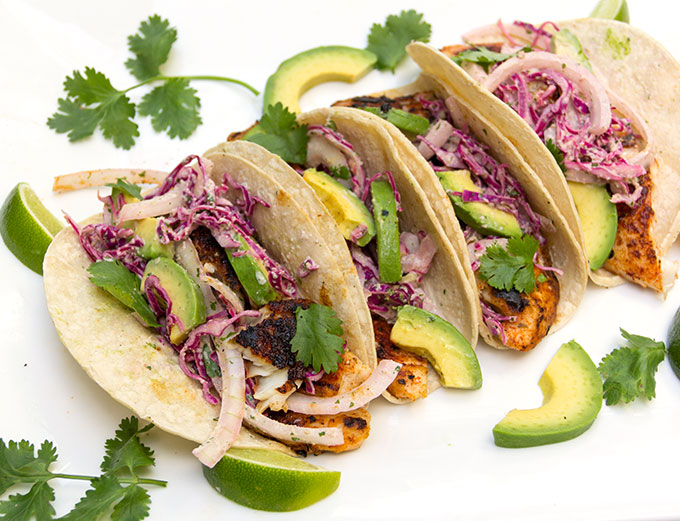

| Measurement | Description |
|---|---|
| 4 | mahi mahi filets |
| 1 1/2 tsp. | paprika |
| 1 tsp. | garlic powder |
| 1 tsp. | oregano |
| 1 tsp. | onion powder |
| 1/2 tsp. | cumin |
| 1/2 tsp. | salt |
| 1/2 tsp. | brown sugar |
| 1/4 tsp. | cayenne pepper |
| 1 T. | olive oil |
| tortillas | |
| various toppings: avocado, lime, cabbage, pico de gallo, cilantro |
Rinse & pat dry mahi mahi filets. In a small bowl, combine all seasonings (paprika through cayenne pepper) and sprinkle generously over both sides of the fish filets. Rub seasonings in. Heat oil in a large pan over medium high heat; once hot, add fish filets and cook 4-5 minutes per side until fish is blackened and flakey. Serve with taco fixings.
